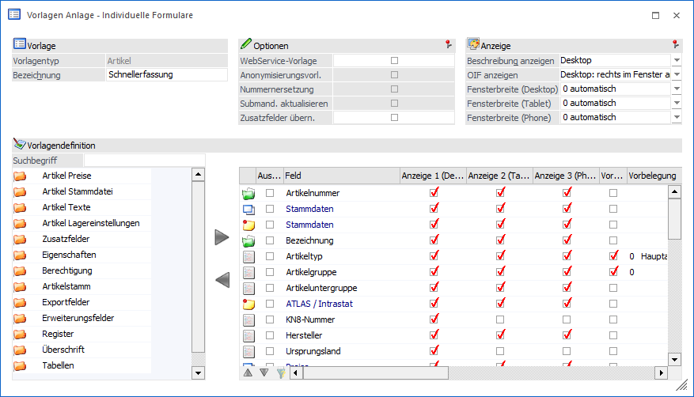
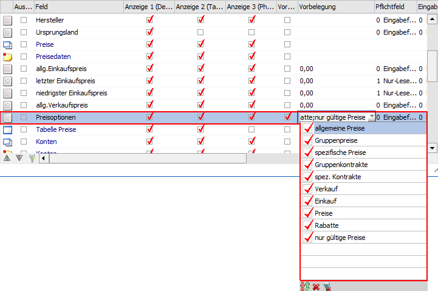

Grundsätzlich unterscheidet sich die Anlage von Vorlagen des Typs "Artikel" nicht von der Anlage anderer Typen. Aus diesem Grund werden in diesem Kapitel nur die Spezial- bzw. Sonderfunktionen beschrieben.

Tabelle "Datenfelder der Vorlage"
Die Definition der Felder erfolgt wie bei allen anderen Vorlagen auch. Allerdings steht folgendes Sonderfelder bzw. -funktionen zur Verfügung.
Ø Preisoptionen
In den Vorlagen für individuelle Formulare des Typs "Artikel" steht das Feld "Preisoptionen" zur Verfügung. Die Option enthält eine Mehrfachauswahl zur Definition, welche Preise (Preisarten) in der Preistabelle des individuellen Formulars angezeigt werden sollen bzw. angelegt oder bearbeitet werden können.

Bei dieser Option ist die Checkbox "Vorbelegung" immer aktiviert.
Hinweis
Ist diese Option nicht in der individuellen Vorlage enthalten, so werden im individuellen Fenster nur jene Preise angezeigt, die für den Benutzer auch im "Standardfenster" des Artikelstammes zur Anzeige aktiviert sind.
Ist dieses Feld in der individuellen Vorlage enthalten und werden die anzuzeigenden Preisoptionen in der Auswahlliste verändert, so wird die Preistabelle aktualisiert / neu aufgebaut. Nicht gespeicherte Tabelleninhalte können dadurch ggfs. verworfen werden.